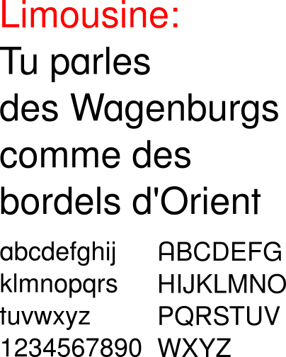

This font was made for a poster to support nine people accused of “criminal association for the purposes of terrorist activity”. They were arrested the 11th of november 2008, in France. They and others are the victims of a witch-hunt where the word “terrorism” was applied to any idea or practice which challenges the status quo. An international movement is emerging in their support.
For the poster, we re-mixed an open font, the Free Sans (think of “Free Avec” as Pierre might say) from Free UCS Outline Fonts.
Even if the license is a bit unclear:
From FreeSans font:
Copyleft 2002, 2003, 2005, 2008 Free Software Foundation.
We did a version with A, R, a, and t glyph modified. The general aspect of the font completely changed. There’s only the regular weight yet, but other may follow. Other versions as well…
Those “terrorists” were arrested in the Goutaillou Farm, in Tarnac, Corrèze. Corrèze is part of the Limousin region. This is why we called it Limousine.
It is also referred to the Limousine car, or limo, which may come from this etymology:
Le nom limousine viendrait du Limousin, la région de Limoges, dont les habitants portaient une vaste pélerine pour se protéger de la pluie, ou en référence à Charles Jeantaud, né à Limoges (1843-1906), l’inventeur de ce type de carrosserie appliquée aux premières voitures confortables. L’origine la plus probable est celle du véhicule hippomobile appelé limousine.